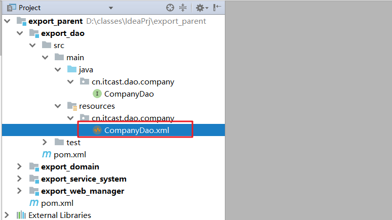

学习目标
1、了解货代项目的功能
2、了解什么是SaaS
3、完善项目后台架构
4、使用UML统一建模语言完成用例图
1. 项目需求（一）什么是SaaS-Export
目标
了解项目需求。
需求描述
Saas-进出口报关==云==平台 （货代云平台）
项目主要解决的问题： 出口报运整套流程管理。
国际物流的业务闭环涉及到海关、船东、港区、仓库、拖车、报关行等多个关联方，交易周期长，支付结算体系受到限制——其复杂性决定了工具的必要性，需要通过工具来建立连接，完成信息的流转、记录。Saas-Export服务于货代企业，通过提供SaaS工具，==帮助中小企业简单便利的对国际物流全环节进行流程控制==。项目重点围绕以下几方面：
- 系统管理(6天、RBAC模型用于控制权限的+ shiro(权限控制框架) , ztree，逆向工程 )
- 货运管理(购销合同管理、报运报运单、装箱管理 7~13 dubbo分布式、POI（导出excel报表）, jasper、业务比较复杂 )
- 统计模块(报表(饼图\柱状图、折线图)echarts , rabbitmq)
- 项目实战(分小组去完成，总共是10个功能)
小结
SaaS-Export项目分为哪几个模块？
- 系统管理
- 货运管理
- 统计分析模块
2. 云服务及云服务的三种模式
目标
- 了解云服务的概念
- 云服务的公司分类
- 认识云服务的三种模式
云服务的概念
“云”其实是互联网的一个隐喻，“云计算” 是基于互联网的相关服务的增加、使用和交付模式，通常涉及通过互联网来提供动态易扩展且经常是虚拟化的资源。==任何一个基于互联网提供计算，存储、业务管理等服务的公司，都可以叫做提供云服务的公司。==
云服务的公司分类
IaaS：Infrastructure as a Service ——卖基础设施服务 (卖硬件)
PaaS：Platform as a Service ——卖平台服务(卖平台)
SaaS：Software as a Service ——卖软件服务(卖软件)
理性认识云服务的三种模式
IaaS（基础设施即服务）
IaaS（Infrastructure as a Service），即基础设施服务。
提供给消费者的服务是对所有计算基础设施的利用，包括处理CPU、内存、存储、网络和其它基本的计算资源，用户能够部署和运行任意软件，包括操作系统和应用程序。
消费者不管理或控制任何云计算基础设施，但能控制操作系统的选择、存储空间、部署的应用，也有可能获得有限制的网络组件（例如路由器、防火墙、负载均衡器等）的控制。
PaaS（平台即服务）
PaaS（Platform-as-a-Service），即平台即服务(阿里云)。提供给消费者的服务是把客户采用提供的开发语言和工具（例如Java，python, .Net等）开发的或收购的应用程序部署到供应商的云计算基础设施上去。客户不需要管理或控制底层的云基础设施，包括网络、服务器、操作系统、存储等，==但客户能控制部署的应用程序，但是不能操作平台(操作系统)、 也可能控制运行应用程序的托管环境配置 .阿里云平台服务器(linux系统)==
SaaS（软件即服务）
SaaS（Software-as-a-Service），即软件即服务。提供给消费者完整的软件解决方案，你可以从软件服务商处以租用或购买等方式获取软件应用，组织用户即可通过 Internet 连接到该应用（通常使用 Web 浏览器）。所有基础结构、中间件、应用软件和应用数据都位于服务提供商的数据中心内。服务提供商负责管理硬件和软件，并根据适当的服务协议确保应用和数据的可用性和安全性。SaaS 让组织能够通过最低前期成本的应用快速建成投产。
感性认识云服务的三种模式
越来越多的软件，开始采用云服务。云服务只是一个统称，可以分成三大类。
IaaS：基础设施服务，Infrastructure-as-a-service
PaaS：平台服务，Platform-as-a-service
SaaS：软件服务，Software-as-a-service它们有什么区别呢？IBM 的软件架构师 Albert Barron 曾经使用披萨作为比喻，解释这个问题。David Ng 进一步引申，让它变得更准确易懂。请设想你是一个餐饮业者，打算做披萨生意。
你可以从头到尾，自己生产披萨，但是这样比较麻烦，需要准备的东西多，因此你决定外包一部分工作，采用他人的服务。你有三个方案。
方案1：IaaS
他人提供厨房、炉子、煤气，你使用这些基础设施，来烤你的披萨。
方案二：PaaS
除了基础设施，他人还提供披萨饼皮。
你只要把自己的配料洒在饼皮上，让他帮你烤出来就行了。也就是说，你要做的就是设计披萨的味道（海鲜披萨或者鸡肉披萨），他人提供平台服务，让你把自己的设计实现。
方案三：SaaS
他人直接做好了披萨，不用你的介入，到手的就是一个成品。你要做的就是把它卖出去，最多再包装一下，印上你自己的 Logo。
小结
什么是云服务公司？ 从事云服务的公司，可以分为哪三类？
云服务公司：
- 基于互联网提供计算、存储这些服务的公司都可以称作为是云服务公司
云服务公司的三类:
- iaas : 卖基础设施
- paas ： 卖平台
- saas ： 卖软件
3. 项目需求（二）项目的开发模型
目标
- 了解软件的开发模型有哪些?每种软件开发模型的具体应用场景?
常用的项目开发模型
1. 原型模型
产品原型图是属于公司产品组去负责，产品原型就是一张图画。
==原型模型的主要作用就是给客户提前看未来的系统长什么样子， 这种模型往往用于客户不清楚自己的需求== 客户就能有一个直观的印象。原型分析的理念是指在获取一组基本需求之后，快速地构造出一个能够反映用户需求的初始系统原型。让用户看到未来系统的概貌，以 便判断哪些功能是符合要求的，哪些方面还需要改进，然后不断地对这些需求进一步补充、细化和修改。依次类推，反复进行，直到用户满意为止并由此开发出完整 的系统。简单的说，原型分析法就是在最短的时间内，以最直观的方式获取用户最真实的需求。
瀑布模型
1970年温斯顿·罗伊斯（Winston Royce）提出了著名的“瀑布模型”，直到80年代早期，它一直是唯一被广泛采用的软件开发模型。==瀑布模型将软件生命周期划分为制定计划、需求分析、软件设计、程序编写、软件测试和运行维护等六个基本活动==，并且规定了它们自上而下、相互衔接的固定次序，如同瀑布流水，逐级下落。从本质来讲，它是一个软件开发架构，开发过程是通过一系列阶段顺序展开的，从系统需求分析开始直到产品发布和维护，每个阶段都会产生循环反馈，因此，如果有信息未被覆盖或者发现了问题，那么最好 “返回”上一个阶段并进行适当的修改，开发进程从一个阶段“流动”到下一个阶段，这也是瀑布开发名称的由来。
瀑布模型核心思想是按工序将问题化简，将功能的实现与设计分开，便于分工协作，即采用结构化的分析与设计方法将逻辑实现与物理实现分开。瀑布模型将软件生命周期划分为软件计划、需求分析和定义、软件设计、软件实现、软件测试、软件运行和维护这6个阶段，规定了它们自上而下、相互衔接的固定次序，如同瀑布流水逐级下落。采用瀑布模型的软件过程如下图所示：
瀑布模型是最早出现的软件开发模型，在软件工程中占有重要的地位，它提供了软件开发的基本框架。其过程是从上一项活动接收该项活动的工作对象作为输入，利用这一输入实施该项活动应完成的内容给出该项活动的工作成果，并作为输出传给下一项活动。同时评审该项活动的实施，若确认，则继续下一项活动；否则返回前面，甚至更前面的活动。
增量模型(如果一个系统非常庞大， 周期五年)
增量模型融合了瀑布模型的基本成分（重复应用）和原型实现的迭代特征，该模型采用随着日程时间的进展而交错的线性序列，每一个线性序列产生软件的一个可发布的“增量”。当使用增量模型时，第1个增量往往是核心的产品，即第1个增量实现了基本的需求，但很多补充的特征还没有发布。客户对每一个增量的使用和评估都作为下一个增量发布的新特征和功能，这个过程在每一个增量发布后不断重复，直到产生了最终的完善产品。增量模型强调每一个增量均发布一个可操作的产品。采用增量模型的软件过程如下图所示：
增量模型与原型实现模型和其他演化方法一样，==本质上是迭代的==，但与原型实现不一样的是其强调每一个增量均发布一个可操作产品。早期的增量是最终产品的“可拆卸”版本，但提供了为用户服务的功能，并且为用户提供了评估的平台。
小结
软件的开发模型有哪些？ 每种软件开发模型在什么时候使用?
- 原型模型（最为常用）： 客户不清楚需求的时候使用。
- 瀑布模型： 客户非常清楚流程的时候我们才会这么干
- 增量模型： 项目比较大的时候我们就需要使用增量模型。
4. 项目需求（三）UML的用例图
目标
- 理解什么是UML？
- 会使用PowerDesigner工具画用例图。
什么是UML？
==Unified Modeling Language (UML)又称统一建模语言或标准建模语言==，是始于1997年一个OMG标准，它是一个支持模型化和软件系统开发的图形化语言，为软件开发的所有阶段提供模型化和可视化支持，包括由需求分析到规格，到构造和配置。==UML中包含很多图形（用例图，类图，状态图、数据模型图等等）==，其中用例图是最能体现系统功能结构的图形。
用例图： 描述系统的角色与功能之间的关系
使用PowerDesigner工具画用例图
PowerDesigner工具介绍
Power Designer 是Sybase()公司的CASE工具集，使用它可以方便地对管理信息系统进行分析设计，他几乎包括了数据库模型设计的全过程。==利用Power Designer可以制作用例图、数据流程图、概念数据模型、物理数据模型，还可以为数据仓库制作结构模型，也能对团队设计模型进行控制。==
下载安装
使用第一天资料中提供的安装包安装PowerDesigner，安装过程略。
绘制用例图
绘制步骤：File=>New Model=>选择Modeltypes=> Object-Oriented Model => Use Case Diagram
什么是用例图？
==描述角色与用例(功能)之间的关系 (角色有哪些功能)==
- 完整用例图如下
小结：
1）什么UML
uml: 统一建模语言- 什么用例图？
- 用例图：描述角色与功能之间的关系
5.系统架构简介
目标
- 了解项目使用的架构
开发环境要求
| 软件 | 版本 |
|---|---|
| JDK | 1.8 一定 千万不要使用jdk1.9 ，因为后面需要学习dubbo，dubbo里面需要使用监控空心zookeeper不支持jdk1.9 |
| MySQL | 5.5以及5.5以上的版本 |
| Idea | 随意 |
| Maven | 3.3.9||3.5没有要 |
工程依赖关系预览
小结
整个项目使用什么架构开发？
- 分模块构建项目
6. 搭建SSM开发环境（一）导入数据库
图1：参考资料中的SQL文件
saas-export.sql
图2：通过SQLYog导入外部的SQL文件到数据库服务端。

图3：点击后
图4：最后结果，观察数据库是否创建成功。
7. 搭建SSM开发环境（二）创建父项目：export_parent
目标
- 明确需求
- 创建父项目
- 父项目中添加依赖包
需求
==搭建好项目的环境，并且完成企业列表展示：==
实现
步骤1：创建项目

==可以删除src目录， 因为不需要写代码==
步骤2：编写export_parent项目的pom.xml, 统一添加项目依赖
<?xml version="1.0" encoding="UTF-8"?>
<project xmlns="http://maven.apache.org/POM/4.0.0"
xmlns:xsi="http://www.w3.org/2001/XMLSchema-instance"
xsi:schemaLocation="http://maven.apache.org/POM/4.0.0 http://maven.apache.org/xsd/maven-4.0.0.xsd">
<modelVersion>4.0.0</modelVersion>
<groupId>cn.itcast</groupId>
<artifactId>export_parent</artifactId>
<version>1.0-SNAPSHOT</version>
<!--
父工程的作用：
统一管理依赖，以及依赖的版本-->
<!-- 集中定义依赖版本号 -->
<properties>
<junit.version>4.12</junit.version>
<spring.version>5.0.2.RELEASE</spring.version>
<pagehelper.version>5.1.8</pagehelper.version>
<servlet-api.version>2.5</servlet-api.version>
<dubbo.version>2.8.4</dubbo.version>
<zookeeper.version>3.4.7</zookeeper.version>
<zkclient.version>0.1</zkclient.version>
<mybatis.version>3.4.5</mybatis.version>
<mybatis.spring.version>1.3.1</mybatis.spring.version>
<mybatis.paginator.version>1.2.15</mybatis.paginator.version>
<mysql.version>5.1.32</mysql.version>
<druid.version>1.0.9</druid.version>
<commons-fileupload.version>1.3.1</commons-fileupload.version>
<jackson.version>2.9.5</jackson.version>
</properties>
<dependencies>
<!-- Spring -->
<dependency>
<groupId>org.springframework</groupId>
<artifactId>spring-context</artifactId>
<version>${spring.version}</version>
</dependency>
<dependency>
<groupId>org.springframework</groupId>
<artifactId>spring-beans</artifactId>
<version>${spring.version}</version>
</dependency>
<dependency>
<groupId>org.springframework</groupId>
<artifactId>spring-webmvc</artifactId>
<version>${spring.version}</version>
</dependency>
<dependency>
<groupId>org.springframework</groupId>
<artifactId>spring-jdbc</artifactId>
<version>${spring.version}</version>
</dependency>
<dependency>
<groupId>org.springframework</groupId>
<artifactId>spring-aspects</artifactId>
<version>${spring.version}</version>
</dependency>
<dependency>
<groupId>org.springframework</groupId>
<artifactId>spring-context-support</artifactId>
<version>${spring.version}</version>
</dependency>
<dependency>
<groupId>org.springframework</groupId>
<artifactId>spring-test</artifactId>
<version>${spring.version}</version>
</dependency>
<!-- Dubbo依赖包 -->
<dependency>
<groupId>javassist</groupId>
<artifactId>javassist</artifactId>
<version>3.11.0.GA</version>
</dependency>
<dependency>
<groupId>commons-codec</groupId>
<artifactId>commons-codec</artifactId>
<version>1.10</version>
</dependency>
<!--web基础包 -->
<dependency>
<groupId>javax.servlet</groupId>
<artifactId>servlet-api</artifactId>
<version>2.5</version>
<scope>provided</scope>
</dependency>
<dependency>
<groupId>javax.servlet.jsp</groupId>
<artifactId>jsp-api</artifactId>
<version>2.0</version>
<scope>provided</scope>
</dependency>
<dependency>
<groupId>jstl</groupId>
<artifactId>jstl</artifactId>
<version>1.2</version>
</dependency>
<!-- Mybatis -->
<dependency>
<groupId>org.mybatis</groupId>
<artifactId>mybatis</artifactId>
<version>${mybatis.version}</version>
</dependency>
<dependency>
<groupId>org.mybatis</groupId>
<artifactId>mybatis-spring</artifactId>
<version>${mybatis.spring.version}</version>
</dependency>
<!-- mybatis分页插件 -->
<dependency>
<groupId>com.github.miemiedev</groupId>
<artifactId>mybatis-paginator</artifactId>
<version>${mybatis.paginator.version}</version>
</dependency>
<dependency>
<groupId>com.github.pagehelper</groupId>
<artifactId>pagehelper</artifactId>
<version>${pagehelper.version}</version>
</dependency>
<!-- MySql -->
<dependency>
<groupId>mysql</groupId>
<artifactId>mysql-connector-java</artifactId>
<version>${mysql.version}</version>
</dependency>
<!-- 连接池 -->
<dependency>
<groupId>com.alibaba</groupId>
<artifactId>druid</artifactId>
<version>${druid.version}</version>
</dependency>
<!-- 文件上传组件 -->
<dependency>
<groupId>commons-fileupload</groupId>
<artifactId>commons-fileupload</artifactId>
<version>${commons-fileupload.version}</version>
</dependency>
<!-- spring整合rabbitmq -->
<dependency>
<groupId>org.springframework.amqp</groupId>
<artifactId>spring-rabbit</artifactId>
<version>2.0.1.RELEASE</version>
</dependency>
<!-- xml解析器通用包：CXF WebService框架 -->
<dependency>
<groupId>org.apache.httpcomponents</groupId>
<artifactId>httpcore</artifactId>
<version>4.4.4</version>
</dependency>
<dependency>
<groupId>org.apache.httpcomponents</groupId>
<artifactId>httpclient</artifactId>
<version>4.5.3</version>
</dependency>
<dependency>
<groupId>dom4j</groupId>
<artifactId>dom4j</artifactId>
<version>1.6.1</version>
</dependency>
<dependency>
<groupId>xml-apis</groupId>
<artifactId>xml-apis</artifactId>
<version>1.4.01</version>
</dependency>
<!--shiro-->
<!--shiro和spring整合-->
<dependency>
<groupId>org.apache.shiro</groupId>
<artifactId>shiro-spring</artifactId>
<version>1.3.2</version>
</dependency>
<!--shiro核心包-->
<dependency>
<groupId>org.apache.shiro</groupId>
<artifactId>shiro-core</artifactId>
<version>1.3.2</version>
</dependency>
<!--测试-->
<dependency>
<groupId>junit</groupId>
<artifactId>junit</artifactId>
<version>4.12</version>
<scope>test</scope>
</dependency>
<!-- jackson支持包 -->
<dependency>
<groupId>com.fasterxml.jackson.core</groupId>
<artifactId>jackson-core</artifactId>
<version>${jackson.version}</version>
</dependency>
<dependency>
<groupId>com.fasterxml.jackson.core</groupId>
<artifactId>jackson-annotations</artifactId>
<version>${jackson.version}</version>
</dependency>
<dependency>
<groupId>com.fasterxml.jackson.core</groupId>
<artifactId>jackson-databind</artifactId>
<version>${jackson.version}</version>
</dependency>
<!--日志包-->
<dependency>
<groupId>org.slf4j</groupId>
<artifactId>slf4j-log4j12</artifactId>
<version>1.7.25</version>
</dependency>
<dependency>
<groupId>log4j</groupId>
<artifactId>log4j</artifactId>
<version>1.2.17</version>
</dependency>
</dependencies>
</project>小结
创建父项目的时候需要完成哪些操作？以及父项目的作用是什么？
删除src，导入依赖
父项目的作用： 减少重复依赖配置的编写。
8. 搭建SSM开发环境（三）创建实体类工程：export_domain
目标
- 完成实体类项目的创建；
- 编写实体类
实现
第一步：创建模块export_domain
图1：新建模块
图2：输入模块名称
图3：选择地址
第二步：编写实体类
图1：创建实体类
图2：编写实体类
package cn.itcast.domain.company;
import java.util.Date;
public class Company {
/**
* 对象唯一标记，对应数据库主键
*/
private String id;
/**
* 公司名称
*/
private String name;
/**
* 到期时间
*/
private Date expirationDate;
/**
* 公司地址
*/
private String address;
/**
* 营业执照
*/
private String licenseId;
/**
* 法人代表
*/
private String representative;
/**
* 公司电话
*/
private String phone;
/**
* 公司规模
*/
private String companySize;
/**
* 所属行业
*/
private String industry;
/**
* 备注
*/
private String remarks;
/**
* 状态
*/
private Integer state;
/**
* 当前余额
*/
private Double balance;
/**
* 创建时间
*/
private Date createTime;
/**
* 城市
*/
private String city;
public Company() {
}
public Company(String id, String name, Date expirationDate, String address, String licenseId, String representative, String phone, String companySize, String industry, String remarks, Integer state, Double balance, Date createTime, String city) {
this.id = id;
this.name = name;
this.expirationDate = expirationDate;
this.address = address;
this.licenseId = licenseId;
this.representative = representative;
this.phone = phone;
this.companySize = companySize;
this.industry = industry;
this.remarks = remarks;
this.state = state;
this.balance = balance;
this.createTime = createTime;
this.city = city;
}
/**
* 获取
* @return id
*/
public String getId() {
return id;
}
/**
* 设置
* @param id
*/
public void setId(String id) {
this.id = id;
}
/**
* 获取
* @return name
*/
public String getName() {
return name;
}
/**
* 设置
* @param name
*/
public void setName(String name) {
this.name = name;
}
/**
* 获取
* @return expirationDate
*/
public Date getExpirationDate() {
return expirationDate;
}
/**
* 设置
* @param expirationDate
*/
public void setExpirationDate(Date expirationDate) {
this.expirationDate = expirationDate;
}
/**
* 获取
* @return address
*/
public String getAddress() {
return address;
}
/**
* 设置
* @param address
*/
public void setAddress(String address) {
this.address = address;
}
/**
* 获取
* @return licenseId
*/
public String getLicenseId() {
return licenseId;
}
/**
* 设置
* @param licenseId
*/
public void setLicenseId(String licenseId) {
this.licenseId = licenseId;
}
/**
* 获取
* @return representative
*/
public String getRepresentative() {
return representative;
}
/**
* 设置
* @param representative
*/
public void setRepresentative(String representative) {
this.representative = representative;
}
/**
* 获取
* @return phone
*/
public String getPhone() {
return phone;
}
/**
* 设置
* @param phone
*/
public void setPhone(String phone) {
this.phone = phone;
}
/**
* 获取
* @return companySize
*/
public String getCompanySize() {
return companySize;
}
/**
* 设置
* @param companySize
*/
public void setCompanySize(String companySize) {
this.companySize = companySize;
}
/**
* 获取
* @return industry
*/
public String getIndustry() {
return industry;
}
/**
* 设置
* @param industry
*/
public void setIndustry(String industry) {
this.industry = industry;
}
/**
* 获取
* @return remarks
*/
public String getRemarks() {
return remarks;
}
/**
* 设置
* @param remarks
*/
public void setRemarks(String remarks) {
this.remarks = remarks;
}
/**
* 获取
* @return state
*/
public Integer getState() {
return state;
}
/**
* 设置
* @param state
*/
public void setState(Integer state) {
this.state = state;
}
/**
* 获取
* @return balance
*/
public Double getBalance() {
return balance;
}
/**
* 设置
* @param balance
*/
public void setBalance(Double balance) {
this.balance = balance;
}
/**
* 获取
* @return createTime
*/
public Date getCreateTime() {
return createTime;
}
/**
* 设置
* @param createTime
*/
public void setCreateTime(Date createTime) {
this.createTime = createTime;
}
/**
* 获取
* @return city
*/
public String getCity() {
return city;
}
/**
* 设置
* @param city
*/
public void setCity(String city) {
this.city = city;
}
public String toString() {
return "Company{id = " + id + ", name = " + name + ", expirationDate = " + expirationDate + ", address = " + address + ", licenseId = " + licenseId + ", representative = " + representative + ", phone = " + phone + ", companySize = " + companySize + ", industry = " + industry + ", remarks = " + remarks + ", state = " + state + ", balance = " + balance + ", createTime = " + createTime + ", city = " + city + "}";
}
}
9. 搭建SSM开发环境（四）创建持久层：export_dao
目标
完成dao工程的环境搭建。
步骤
- 完成持久层项目的创建、添加依赖( 依赖domain模块)
- 编写dao接口
- 编写dao接口映射
- 引入数据库连接配置文件
- 实现Spring整合MyBatis的配置
预览
export_dao项目效果预览图，如下：
实现
第一步：创建模块export_dao
第二步：添加依赖
<?xml version="1.0" encoding="UTF-8"?>
<project xmlns="http://maven.apache.org/POM/4.0.0"
xmlns:xsi="http://www.w3.org/2001/XMLSchema-instance"
xsi:schemaLocation="http://maven.apache.org/POM/4.0.0 http://maven.apache.org/xsd/maven-4.0.0.xsd">
<parent>
<artifactId>export_parent</artifactId>
<groupId>cn.itcast</groupId>
<version>1.0-SNAPSHOT</version>
</parent>
<modelVersion>4.0.0</modelVersion>
<artifactId>export_dao</artifactId>
<!--依赖domain-->
<dependencies>
<dependency>
<groupId>cn.itcast</groupId>
<artifactId>export_domain</artifactId>
<version>1.0-SNAPSHOT</version>
</dependency>
</dependencies>
</project>第三步：创建CompanyDao接口
package cn.itcast.dao.company;
import cn.itcast.domain.company.Company;
import java.util.List;
public interface CompanyDao {
//查找所有的企业
List<Company> findAll();
}
第四步：编写CompanyDao.xml接口的映射文件
==备注： 在resources目录下创建包，包与包之间是使用\分割的，并且包名要接口所在的包一致。==
图1：创建CompanyDao.xml文件

图2：完善CompanyDao.xml
<?xml version="1.0" encoding="UTF-8" ?>
<!DOCTYPE mapper
PUBLIC "-//mybatis.org//DTD Mapper 3.0//EN"
"http://mybatis.org/dtd/mybatis-3-mapper.dtd">
<!-- namespace名称空间，名称空间代表该xml文件映射是哪个接口-->
<mapper namespace="cn.itcast.dao.company.CompanyDao">
<!--结果映射器-->
<resultMap id="BaseResultMap" type="cn.itcast.domain.company.Company">
<id column="id" property="id"/>
<result column="name" property="name"/>
<result column="expiration_date" property="expirationDate"/>
<result column="address" property="address"/>
<result column="license_id" property="licenseId"/>
<result column="representative" property="representative"/>
<result column="phone" property="phone"/>
<result column="company_size" property="companySize"/>
<result column="industry" property="industry"/>
<result column="remarks" property="remarks"/>
<result column="state" property="state"/>
<result column="balance" property="balance"/>
<result column="city" property="city"/>
</resultMap>
<select id="findAll" resultMap="BaseResultMap">
select * from ss_company
</select>
</mapper>第五步：新建properties目录，引入db.properties配置文件
jdbc.url=jdbc:mysql:///saas-export
jdbc.username=root
jdbc.password=root
jdbc.driver=com.mysql.jdbc.Driver第六步：新建spring目录，编写spring整合mybatis配置文件applicationContext-dao.xml
图1: 新建目录、文件
图2：applicationContext-dao.xml配置内容如下
<?xml version="1.0" encoding="UTF-8"?>
<beans xmlns="http://www.springframework.org/schema/beans"
xmlns:xsi="http://www.w3.org/2001/XMLSchema-instance"
xmlns:context="http://www.springframework.org/schema/context"
xsi:schemaLocation="http://www.springframework.org/schema/beans
http://www.springframework.org/schema/beans/spring-beans.xsd http://www.springframework.org/schema/context http://www.springframework.org/schema/context/spring-context.xsd">
<!--spring 整合mybatis-->
<!--1.加载db.properties配置文件-->
<context:property-placeholder location="classpath:properties/db.properties"/>
<!--2.创建连接池对象-->
<bean id="dataSource" class="com.alibaba.druid.pool.DruidDataSource">
<property name="driverClassName" value="${jdbc.driver}"/>
<property name="url" value="${jdbc.url}"/>
<property name="username" value="${jdbc.username}"/>
<property name="password" value="${jdbc.password}"/>
</bean>
<!--3. 创建sqlSession工厂对象-->
<bean class="org.mybatis.spring.SqlSessionFactoryBean">
<property name="dataSource" ref="dataSource"/>
<!--别名扫描，扫描的是domain-->
<property name="typeAliasesPackage" value="cn.itcast.domain"/>
</bean>
<!--4. 扫描dao包-->
<bean class="org.mybatis.spring.mapper.MapperScannerConfigurer">
<property name="basePackage" value="cn.itcast.dao"/>
</bean>
</beans>测试
package cn.itcast.test;
import cn.itcast.dao.company.CompanyDao;
import cn.itcast.domain.company.Company;
import org.junit.Test;
import org.junit.runner.RunWith;
import org.springframework.beans.factory.annotation.Autowired;
import org.springframework.test.context.ContextConfiguration;
import org.springframework.test.context.junit4.SpringJUnit4ClassRunner;
import java.util.List;
@RunWith(SpringJUnit4ClassRunner.class)
@ContextConfiguration("classpath:spring/applicationContext-dao.xml")
public class CompanyTest {
@Autowired
private CompanyDao companyDao;
@Test
public void test01(){
List<Company> list = companyDao.findAll();
System.out.println("企业的列表："+list);
}
}
小结
创建持久层项目，我们做了什么？
- 依赖domain
- 编写CompanyDao接口
- 编写CompanyDao映射文件
- 编写db.properties
- 编写spring整合mybatis的文件，applicationContext-dao.xml
10.搭建SSM开发环境（五）创建业务工程：export_system_service
目标
完成service工程的环境搭建。
步骤
- 完成业务层项目的创建、依赖的添加(依赖Dao层)
- 编写service接口
- 编写service接口实现
- 编写applicationContext-tx.xml，配置Spring声明式事务 （在实际开发中事务的控制都是在service）
预览
实现
第一步：创建模块export_system_service
第二步：添加依赖

<?xml version="1.0" encoding="UTF-8"?>
<project xmlns="http://maven.apache.org/POM/4.0.0"
xmlns:xsi="http://www.w3.org/2001/XMLSchema-instance"
xsi:schemaLocation="http://maven.apache.org/POM/4.0.0 http://maven.apache.org/xsd/maven-4.0.0.xsd">
<parent>
<artifactId>export_parent</artifactId>
<groupId>cn.itcast</groupId>
<version>1.0-SNAPSHOT</version>
</parent>
<modelVersion>4.0.0</modelVersion>
<artifactId>export_system_service</artifactId>
<!--service依赖dao-->
<dependencies>
<dependency>
<groupId>cn.itcast</groupId>
<artifactId>export_dao</artifactId>
<version>1.0-SNAPSHOT</version>
</dependency>
</dependencies>
</project>第三步：编写service接口
package cn.itcast.service.company;
import cn.itcast.domain.company.Company;
import java.util.List;
public interface CompanyService {
//查找所有的企业
List<Company> findAll();
}
第四步：编写service接口实现
package cn.itcast.service.company.impl;
import cn.itcast.dao.company.CompanyDao;
import cn.itcast.domain.company.Company;
import cn.itcast.service.company.CompanyService;
import org.springframework.beans.factory.annotation.Autowired;
import org.springframework.stereotype.Service;
import java.util.List;
@Service
public class CompanyServiceImpl implements CompanyService {
@Autowired
private CompanyDao companyDao;
//查找所有的企业
@Override
public List<Company> findAll() {
List<Company> list = companyDao.findAll();
return list;
}
}
第五步：编写spring核心文件处理事务
图1：创建spring目录，创建applicationContext-tx.xml配置文件
图2：完整配置代码
<?xml version="1.0" encoding="UTF-8"?>
<beans xmlns="http://www.springframework.org/schema/beans"
xmlns:xsi="http://www.w3.org/2001/XMLSchema-instance"
xmlns:context="http://www.springframework.org/schema/context" xmlns:tx="http://www.springframework.org/schema/tx"
xmlns:aop="http://www.springframework.org/schema/aop"
xsi:schemaLocation="http://www.springframework.org/schema/beans
http://www.springframework.org/schema/beans/spring-beans.xsd http://www.springframework.org/schema/context http://www.springframework.org/schema/context/spring-context.xsd http://www.springframework.org/schema/tx http://www.springframework.org/schema/tx/spring-tx.xsd http://www.springframework.org/schema/aop http://www.springframework.org/schema/aop/spring-aop.xsd">
<!--1.扫描service包-->
<context:component-scan base-package="cn.itcast.service"/>
<!--2.创建事务管理器-->
<bean id="transactionManager" class="org.springframework.jdbc.datasource.DataSourceTransactionManager">
<property name="dataSource" ref="dataSource"/>
</bean>
<!--3.配置事务通知规则-->
<tx:advice id="ad" transaction-manager="transactionManager">
<tx:attributes>
<tx:method name="find*" propagation="SUPPORTS"/>
<tx:method name="get*" propagation="SUPPORTS"/>
<tx:method name="select*" propagation="SUPPORTS"/>
<tx:method name="query*" propagation="SUPPORTS"/>
<tx:method name="*" propagation="REQUIRED"/>
</tx:attributes>
</tx:advice>
<!--4.配置切面-->
<aop:config>
<!--切入点表达式-->
<aop:pointcut id="pt" expression="execution(* cn.itcast.service.*.impl.*.*(..))"/>
<!--配置通知-->
<aop:advisor advice-ref="ad" pointcut-ref="pt"/>
</aop:config>
</beans>测试
package cn.itcast.test;
import cn.itcast.domain.company.Company;
import cn.itcast.service.company.CompanyService;
import org.junit.Test;
import org.junit.runner.RunWith;
import org.springframework.beans.factory.annotation.Autowired;
import org.springframework.test.context.ContextConfiguration;
import org.springframework.test.context.junit4.SpringJUnit4ClassRunner;
import java.util.List;
@RunWith(SpringJUnit4ClassRunner.class)
//注意： 我们的service是依赖dao的时候，所以我们加载配置文件的时候一定需要把dao的配置文件也要加载进来。
//注意： 如果加载多个配置文件的时候需要使用classpath*:
@ContextConfiguration("classpath*:spring/applicationContext-*.xml")
public class CompanyServiceTest {
@Autowired
private CompanyService companyService;
@Test
public void test01(){
List<Company> list = companyService.findAll();
System.out.println("查找到的企业是:"+list);
}
}
小结
业务层的配置文件我们做了哪些事情？
- 配置事务管理
==注意： service层测试的一定要把dao的配置文件加载进来==
11.搭建SSM开发环境（六）web工程 A 创建项目、配置web.xml文件
目标
- 创建web项目创建：export_web_manager
- 配置web.xml
分析
步骤分析：
这里让大家对web项目整体实现步骤有一个初步认识，在本章中只实现下面的前2步：
1. 完成web层项目的创建、依赖的添加(依赖service)
2. 配置web.xml(配置核心控制器、 监听器、字符过滤器)
- 配置log4j.properties
- 配置springmvc.xml
- 编写控制器
- 编写页面
预览
这里是整个web项目的预览，现在只实现前2步：
实现
第一步：创建项目export_web_manager，并且转换为web项目
第二步：添加依赖
<?xml version="1.0" encoding="UTF-8"?>
<project xmlns="http://maven.apache.org/POM/4.0.0" xmlns:xsi="http://www.w3.org/2001/XMLSchema-instance" xsi:schemaLocation="http://maven.apache.org/POM/4.0.0 http://maven.apache.org/xsd/maven-4.0.0.xsd">
<parent>
<artifactId>export_parent</artifactId>
<groupId>cn.itcast</groupId>
<version>1.0-SNAPSHOT</version>
</parent>
<modelVersion>4.0.0</modelVersion>
<artifactId>export_web_manager</artifactId>
<packaging>war</packaging>
<dependencies>
<!--依赖service-->
<dependency>
<groupId>cn.itcast</groupId>
<artifactId>export_system_service</artifactId>
<version>1.0-SNAPSHOT</version>
</dependency>
</dependencies>
</project>
第三步：编写web.xml配置
<?xml version="1.0" encoding="UTF-8"?>
<web-app xmlns:xsi="http://www.w3.org/2001/XMLSchema-instance"
xmlns="http://java.sun.com/xml/ns/javaee"
xsi:schemaLocation="http://java.sun.com/xml/ns/javaee http://java.sun.com/xml/ns/javaee/web-app_2_5.xsd"
version="2.5">
<!--1.核心控制器 -->
<servlet>
<servlet-name>dispatcherServlet</servlet-name>
<servlet-class>org.springframework.web.servlet.DispatcherServlet</servlet-class>
<!--1.1加载springmvc的配置文件-->
<init-param>
<param-name>contextConfigLocation</param-name>
<param-value>classpath:spring/springmvc.xml</param-value>
</init-param>
<!--1.2 服务器启动的时候创建该servlet的对象-->
<load-on-startup>1</load-on-startup>
</servlet>
<servlet-mapping>
<servlet-name>dispatcherServlet</servlet-name>
<url-pattern>*.do</url-pattern>
</servlet-mapping>
<!--2. 字符过滤器-->
<filter>
<filter-name>characterEncodingFilter</filter-name>
<filter-class>org.springframework.web.filter.CharacterEncodingFilter</filter-class>
<init-param>
<param-name>encoding</param-name>
<param-value>utf-8</param-value>
</init-param>
</filter>
<filter-mapping>
<filter-name>characterEncodingFilter</filter-name>
<url-pattern>/*</url-pattern>
</filter-mapping>
<!--3. 使用监听器加载applicationContext-*配置文件-->
<listener>
<listener-class>org.springframework.web.context.ContextLoaderListener</listener-class>
</listener>
<context-param>
<param-name>contextConfigLocation</param-name>
<param-value>classpath*:spring/applicationContext-*.xml</param-value>
</context-param>
</web-app>小结
- web.xml配置了哪些内容？
- 核心控制器
- 字符过滤器
- 监听器
12.搭建SSM开发环境（七）web工程 C 配置springmvc.xml文件
目标
- 完成springmvc.xml配置。
- 引入log4j.properties配置
实现
现在完成springmvc.xml配置：
图1：
图2：完整配置实现
<?xml version="1.0" encoding="UTF-8"?>
<beans xmlns="http://www.springframework.org/schema/beans"
xmlns:xsi="http://www.w3.org/2001/XMLSchema-instance"
xmlns:context="http://www.springframework.org/schema/context"
xmlns:mvc="http://www.springframework.org/schema/mvc"
xsi:schemaLocation="http://www.springframework.org/schema/beans
http://www.springframework.org/schema/beans/spring-beans.xsd http://www.springframework.org/schema/context http://www.springframework.org/schema/context/spring-context.xsd http://www.springframework.org/schema/mvc http://www.springframework.org/schema/mvc/spring-mvc.xsd">
<!--视图解析器-->
<bean class="org.springframework.web.servlet.view.InternalResourceViewResolver">
<!--配置前缀 ， WEB-INF目录是一个受保护的目录，外界通过浏览器没法访问web-inf目录下的内容，
这里的内容只能通过请求转发到该目录的资源-->
<property name="prefix" value="/WEB-INF/pages/"/>
<!--配置后缀-->
<property name="suffix" value=".jsp"/>
</bean>
<!--包扫描-->
<context:component-scan base-package="cn.itcast.web"/>
<!--注解驱动-->
<mvc:annotation-driven/>
</beans>小结
- springmvc.xml配置文件，配置了哪些内容？
- 配置视图解析器
- 开启包扫描 - 开启注解驱动
13.搭建SSM开发环境（八）web工程 D 编写控制器
目标
编写控制器类，处理用户请求和响应。
实现
图1：
图2：
package cn.itcast.web.controller;
import cn.itcast.domain.company.Company;
import cn.itcast.service.company.CompanyService;
import org.springframework.beans.factory.annotation.Autowired;
import org.springframework.stereotype.Controller;
import org.springframework.web.bind.annotation.RequestMapping;
import javax.servlet.http.HttpServletRequest;
import java.util.List;
@Controller
@RequestMapping("/company")
public class CompanyController {
@Autowired
private CompanyService companyService;
@RequestMapping("/list")
public String list(HttpServletRequest request){
List<Company> list = companyService.findAll();
//存储到请求域中
request.setAttribute("list",list);
//请求转到到页面
return "company/company-list";
}
}
小结
CompanyController使用上的注解
- @Controller 把当前类变成一个控制器
- @RequestMapping 编写映射路径14.搭建SSM开发环境（九）web工程 E 编写页面
目标
编写页面，实现数据展示。
实现
第一步：创建如下页面（可以参考提供的资料，把资料中的pages文件夹拷贝到WEB-INF目录下。）
第二步：完善company-list.jsp页面
<%@ taglib prefix="c" uri="http://java.sun.com/jsp/jstl/core" %>
<%@ page contentType="text/html;charset=UTF-8" language="java" %>
<html>
<head>
<title>Title</title>
</head>
<body>
<!--数据列表-->
<table id="dataList">
<thead>
<tr>
<th class="sorting">企业名称</th>
<th class="sorting">所在地</th>
<th class="sorting">地址</th>
<th class="sorting">企业法人</th>
<th class="sorting">联系方式</th>
<th class="sorting">所属行业</th>
<th class="sorting">状态</th>
<th class="sorting">余额</th>
</tr>
</thead>
<tbody>
<c:forEach items="${list}" var="company">
<tr>
<td>${company.name}</td>
<td>${company.city}</td>
<td>${company.address}</td>
<td>${company.representative}</td>
<td>${company.phone}</td>
<td>${company.industry}</td>
<td>${company.state}</td>
<td>${company.balance}</td>
</tr>
</c:forEach>
</tbody>
</table>
</body>
</html>
15.搭建SSM开发环境（十）web工程 F 测试
目标
- idea关联一个tomcat，把项目发布到tomcat中。
- 启动项目，确保项目可以正确启动。如果出错，查找错误原因。（基本都是配置漏了或写错）
实现
测试之前先把添加到resources目录中
log4j.rootLogger=debug,stdout log4j.appender.stdout=org.apache.log4j.ConsoleAppender log4j.appender.stdout.Target=System.out log4j.appender.stdout.layout=org.apache.log4j.SimpleLayout
- 测试
小结
SSM开发环境搭建完成！
16.日期类型转换器
目标
通过自定义日期类型转换器，实现可以自动把请求的String转换为Data日期对象。
导入
第一步：控制器添加如下测试方法
package cn.itcast.web.controller;
import cn.itcast.domain.company.Company;
import cn.itcast.service.company.CompanyService;
import org.springframework.beans.factory.annotation.Autowired;
import org.springframework.stereotype.Controller;
import org.springframework.web.bind.annotation.RequestMapping;
import javax.servlet.http.HttpServletRequest;
import java.util.Date;
import java.util.List;
@Controller
@RequestMapping("/company")
public class CompanyController {
@Autowired
private CompanyService companyService;
@RequestMapping("/list")
public String list(HttpServletRequest request){
List<Company> list = companyService.findAll();
//存储到请求域中
request.setAttribute("list",list);
//请求转到到页面
return "company/company-list";
}
/*
类型转换器的实现步骤：
1. 自定义一个类实现Converter接口
2. 实现接口的方法
3. 创建转换器对象，并且交给spring的工厂
4. 把自定义转换器的对象交给转换器的工厂
5. 把转换器工厂交给注解驱动去启动
*/
@RequestMapping("/save")
public String save(Date birthday){
System.out.println("老钟的生日："+birthday);
return "success";
}
}
第二步：访问测试
观察日志：
2019-04-08 10:41:25,122 WARN [org.springframework.web.servlet.mvc.support.DefaultHandlerExceptionResolver] - Failed to bind request element: org.springframework.web.method.annotation.MethodArgumentTypeMismatchException: Failed to convert value of type 'java.lang.String' to required type 'java.util.Date'; nested exception is org.springframework.core.convert.ConversionFailedException: Failed to convert from type [java.lang.String] to type [java.util.Date] for value '1998-09-09'; nested exception is java.lang.IllegalArgumentException
实现
现在我们来实现自定义日期类型转换器，解决上述问题：
第一步：编写一个转换器类
图1：
图2：
package cn.itcast.web.converter;
import org.springframework.core.convert.converter.Converter;
import org.springframework.stereotype.Component;
import java.text.ParseException;
import java.text.SimpleDateFormat;
import java.util.Date;
/*
类型转换器的实现步骤：
1. 自定义一个类实现Converter接口
2. 实现接口的方法
3. 创建转换器对象，并且交给spring的工厂
4. 把自定义转换器的对象交给转换器的工厂
5. 把转换器工厂交给注解驱动去启动
*/
@Component
public class StringToDateConverter implements Converter<String,Date> {
@Override
public Date convert(String source) {
try {
SimpleDateFormat simpleDateFormat = new SimpleDateFormat("yyyy-MM-dd");
Date date = simpleDateFormat.parse(source);
return date;
} catch (ParseException e) {
e.printStackTrace();
throw new RuntimeException(e);
}
}
}
第二步：在springmvc.xml中配置转换器工厂
<?xml version="1.0" encoding="UTF-8"?>
<beans xmlns="http://www.springframework.org/schema/beans"
xmlns:xsi="http://www.w3.org/2001/XMLSchema-instance"
xmlns:context="http://www.springframework.org/schema/context"
xmlns:mvc="http://www.springframework.org/schema/mvc"
xsi:schemaLocation="http://www.springframework.org/schema/beans
http://www.springframework.org/schema/beans/spring-beans.xsd http://www.springframework.org/schema/context http://www.springframework.org/schema/context/spring-context.xsd http://www.springframework.org/schema/mvc http://www.springframework.org/schema/mvc/spring-mvc.xsd">
<!--视图解析器-->
<bean class="org.springframework.web.servlet.view.InternalResourceViewResolver">
<!--配置前缀 ， WEB-INF目录是一个受保护的目录，外界通过浏览器没法访问web-inf目录下的内容，
这里的内容只能通过请求转发到该目录的资源-->
<property name="prefix" value="/WEB-INF/pages/"/>
<!--配置后缀-->
<property name="suffix" value=".jsp"/>
</bean>
<!--包扫描-->
<context:component-scan base-package="cn.itcast.web"/>
<!--注解驱动-->
<!--==============================注册类型转换器=============================-->
<!--4. 把自定义转换器的对象交给转换器的工厂-->
<bean id="converterFactory" class="org.springframework.context.support.ConversionServiceFactoryBean">
<property name="converters">
<set>
<ref bean="stringToDateConverter"/>
</set>
</property>
</bean>
<!--5. 把转换器工厂交给注解驱动去启动 ， 记住： 删除上面注解驱动-->
<mvc:annotation-driven conversion-service="converterFactory"/>
</beans>小结
定义日期类型转换器的自定义步骤？
- 自定义一个类实现Converter接口
- 实现接口的方法
- 创建自定义类型转换器的对象，并且交给类型转换器的工厂
- 把类型转换器的工厂交给注解驱动启动
17.统一异常处理
目标
实现项目中统一异常的配置。提供系统的容错性。
引入
实现项目中统一异常的配置，做到项目后台出现异常，自动跳转到错误页面。
第一步：模拟异常。
第二步：访问测试
实现
第一步：创建自定义异常类
图1：
图2：
package cn.itcast.web.exceptions;
import org.springframework.stereotype.Component;
import org.springframework.web.servlet.HandlerExceptionResolver;
import org.springframework.web.servlet.ModelAndView;
import javax.servlet.http.HttpServletRequest;
import javax.servlet.http.HttpServletResponse;
/*
异常处理器步骤：
1. 自定义一个类实现HandlerExceptionResolver接口
2. 实现接口的方法
3. 创建自定义异常处理器的对象交给spring容器即可。
*/
@Component
public class CustomerExceptionResolver implements HandlerExceptionResolver {
@Override
public ModelAndView resolveException(HttpServletRequest httpServletRequest, HttpServletResponse httpServletResponse, Object o, Exception e) {
//1. 创建ModleAndView对象
ModelAndView mv = new ModelAndView();
//2. 把异常信息存储到request域中
mv.addObject("errorMsg",e.getMessage());
//3. 设置返回的视图名称
mv.setViewName("error");
return mv;
}
}
定义错误页面
<%@ page contentType="text/html;charset=UTF-8" language="java" %> <html> <head> <title>Title</title> </head> <body> 访问出现了异常：${errMsg} </body> </html>
小结
定义异常处理器的步骤：
- 自定义一个类实现HandlerExceptionResover接口
- 创建异常处理器的对象